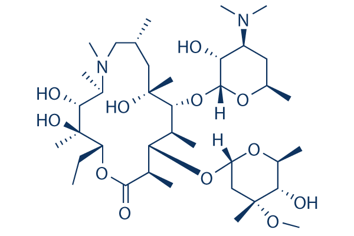

Molecule: Azithromycin Total number of chiral centers: 18 ---------------------------------------- Atom Index | Element | Configuration ---------------------------------------- 2 | C | R 6 | C | R 8 | C | S 10 | C | R 12 | C | S 14 | C | S 15 | C | R 21 | C | S 23 | C | R 25 | C | S 27 | C | R 30 | C | S 31 | C | R 36 | C | R 38 | C | R 41 | C | R 42 | C | R 43 | C | S Register Number: RA2511026050045 Name: Manikandan Rohan R Department: CSE w/s in AIML , Section: A
Run completed successfully (build exit code 0)